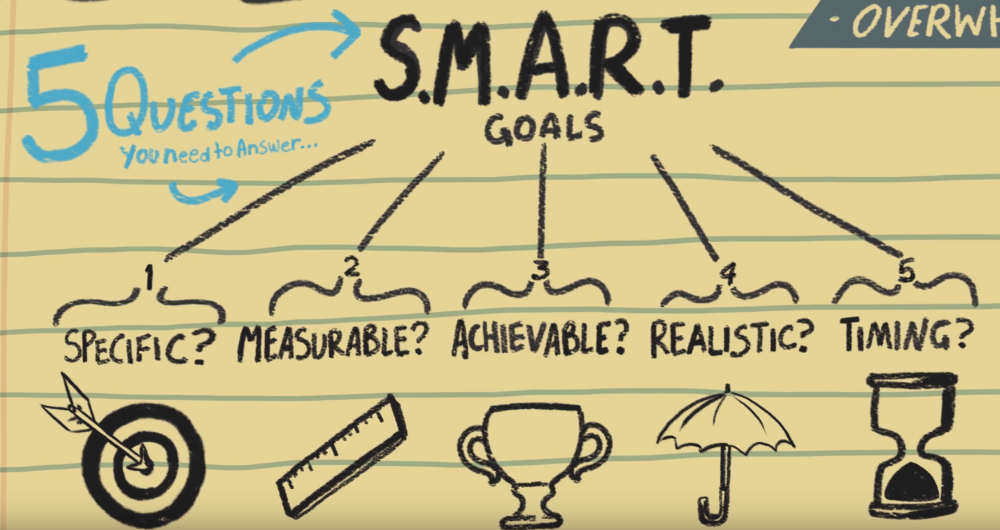
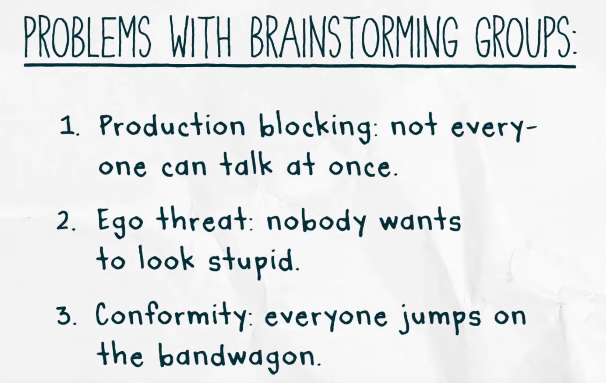
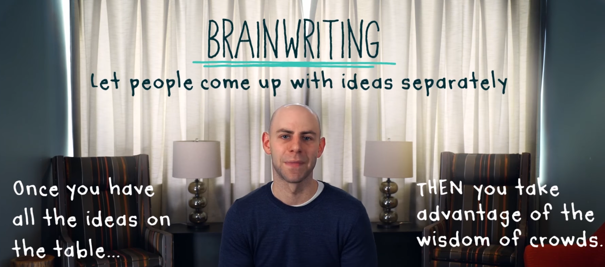
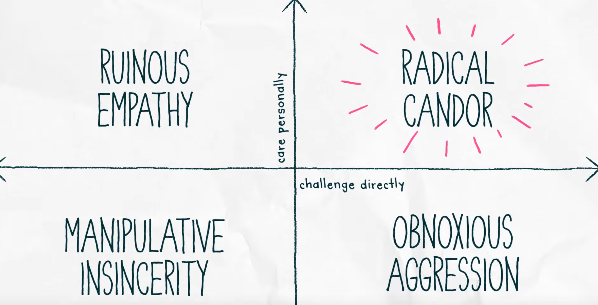

On Leadership
- Watch the full series on YouTube #DayOneInsights
Here are some summarized notes for some common aspects for leaders. This is targeted for entrepreneurs but does apply to anyone who want to be a good leader
Amy Cuddy - Be the best boss
- To be an effective leader
- Your Likeability, Trustworthiness wins over Strength, confidence, decisiveness (and other attributes)
- Let your team know, why they should trust you?
-
Remember You don't get trust by default, you earn trust!
Susan Cain - How to lead introverts
- You won't be able to lead introverts if you don't under who they are and what their needs are?
- There is no one size fits all strategy when it comes to team members
- Figure out the team, where each member complements each other and put them in a position to succeed
Mark Cuban - 3 essential rules for entrepreneurs
When you are a manager, you have to be able to kick your own ass before someone else does it for you - Adapted from a quote by Mark cuban
- Selling is not convincing, but helping!
- All entrepreneur's lies to themselves, That are doing good, everybody loves us, However You should ...
- Be brutally honest with yourself
- What do we do well?
- What do we not do well?
- What are the challenges?
- How can we improve upon them?
Writing smart goals
- Video
- Write your stretch goal
- Break it down into a plan
- Specific, Measurable, Achievable, Realistic, Timing (SMART)
- Specific: How am I going to do this?
- Measurable: What would success look like
- Achievable: Is this achievable, if not lets tone it down a bit
- Realistic: How can we realistically achieve this
- Timing: How soon do we need to do this?

How to give useful feedback
- Kim Scott - How to give useful feedback
- Think of feedback more as guidance
- We want, Good stuff people do => Do more of it => Give praise
- We want, Bad stuff people do => Stop doing it => Give criticism
- Give guidance with a spirit of being Humble, helpful
- You are trying to help the person solve/fix a problem
- You want to give guidance immediately and in-person
- Remember: Feedback is measured not at your mouth but at the other persons ear
- You need to see how the other person is reacting to the feedback
-
You want to give praise in public and criticism in private
- Praise is specific and sincere
- Criticism is Kind and clear
- Give praise/criticism about a persons behavior, You don't want to make it about their personality
- Give a little criticism and lot of praise every single week
Adam Grant - The trick to successful brainstorming
- See below images to understand problems with brainstorming and its solution
-
Ask people to write down their ideas separately in advance and then discuss


Kim Scott - Care personally. Challenge directly
- 4 quadrants
- Radical candor - Care personally + Challenge directly
- Correct style ✅, Impromptu feedback delivered in person with compassion
- Just say what you think
- Obnoxious aggression - Challenge directly + Don't show that you care
- You are just being a jerk
- Ruinous empathy - Care personally + Don't challenge directly
- Trying to be nice, but not help people improve
- Manipulative insincerity - Don't care personally + Don't challenge directly
- Political, passive aggressive, backstabbing behavior
- Don't judge someone by their behaviors, but try to move more towards radical candor

Here is another related video by Kim